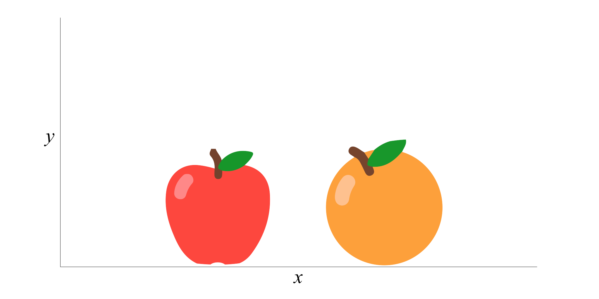

| Scale | Characteristics | Examples |
|---|---|---|
| Nominal | Named categories No quantitative distinctions |
Gender Eye color Experimental condition |
| Ordinal | Ordered categories Indicates direction, but not size of difference |
Rank Clothing sizes Olympic medals |
| Interval | Ordered categories Equal intervals between categories Arbitrary or absent zero point |
Temperature (Celcius/Fahrenheit) Golf scores |
| Ratio | Ordered categories Equal interval between categories Absolute zero point |
Temperature (Kelvin) Number of correct answers Response time |
2|VARIABLES
Overview
Making statistics
- Where do statistics come from?
Producing a statistic
- How many books are red
- Gather data to determine what proportion of books are red
- Enter your best estimate and explain your process
- Suggested time limit: 5 minutes

Making statistics
In the United States today half of all children (35.6 million) live in a household where a parent or other adult uses tobacco, drinks heavily or uses illicit drugs1
- Other questions…
- How many students are smokers?
- Young people, narcissism, anxiety, depression 2
Measuring things
Constructs & operational definitions
- Construct: Extroversion
- Operational definition: Big 5 questions
- Construct: Intelligence
- Operational definition: IQ test
- Construct: Height
- Operational definition: How far the top of your head is from the floor according to a tape measure
Operationalizing variables
- Usually more than one way we could measure & record data
- Result in different types of data, and potentially different applicable analyses
- How to decide on operational definition?
- Aspects to consider:
- Type of variable (discrete / continuous)
- Scale of measurement (nominal / ordinal / interval / ratio)
- Aspects to consider:
Types of variable
- Discrete
- Count as whole numbers
- Separate, indivisible categories
- No values exist between neighboring categories
- E.g. number of children/cats/tvs; positive cases; hospital admissions
- Continuous
- Can be measured with decimals
- Has infinite number of possible values
- Every interval is divisible into infinite number of parts
- E.g. height, time, temperature


Scales of measurement
Likert scales
What is your current level of happiness?
Populations & samples
Draw sample, make inference
data = {
let arr = [];
for (var i = 0; i < 150; i++) {
arr.push({
x: Math.floor(Math.random() * xmax),
y: Math.floor(Math.random() * ymax),
color: Math.floor(Math.random() * 7)
});
}
return arr;
}
width = 1050
height = 500
r = 15
xmax = 400
ymax = 100
sample_y = height - r - 1
margin = ({top: r*2, right: 10, bottom: r, left: 5});
pop = {
const svg = d3.select(DOM.svg(width, height));
const sample = svg.append("g").attr("id", "sample-circles")
const circles = svg.append("g").attr("id", "pop-circles")
let path = {
x: (width*0.5 + xmax*.5 + r),
y: (margin.top + ymax*0.5),
cy: (height - r - (margin.top + ymax*0.5)) * 0.5
};
const paths = svg.append("g").attr("id", "paths")
.attr("stroke", "black")
.attr("fill", "none")
.attr("class", "invertable");
sample.selectAll("circle")
.data(new_sample)
.enter()
.append("circle")
.attr("fill", d => color(d))
.attr("stroke", "black")
.attr("r", r)
.attr("cx", function(d, i) {return (i * 41.5 + width/2 - xmax/2 + r)})
.attr("cy", 55)
.transition()
.duration(700)
.delay(function(d, i) {return i * 50})
.attr("cy", sample_y);
circles.selectAll("circle")
.data(data)
.enter()
.append("circle")
.attr("fill", d => color(d.color))
.attr("stroke", "black")
.attr("r", 15)
.attr("cx", d => x(d.x))
.attr("cy", d => y(d.y))
svg.append("rect").attr("id", "population-box")
.attr("x", width/2 - xmax/2 - r)
.attr("y", margin.top - r)
.attr("width", xmax + 2*r)
.attr("height",ymax + 2*r)
.attr("fill", "white")
svg.append("rect").attr("id", "population-outline")
.attr("x", width/2 - xmax/2 - r)
.attr("y", margin.top - r)
.attr("width", xmax + 2*r)
.attr("height",ymax + 2*r)
.attr("stroke", "black")
.attr("fill", "none")
paths.append("path").attr("id", "inference-path")
.attr("d", "M" + path.x + "," + path.y + ", q200," + path.cy + " 0," + (height - r - path.y))
.attr("stroke-dasharray", [5, 5])
paths.append("path").attr("id", "sample-path")
.attr("d", "M" + (path.x - xmax - 2*r) + "," + path.y + ", q-200," + path.cy + " 0," + (height - r - path.y))
svg.append("polygon").attr("id", "down-arrow")
.attr("points", [[0,0],[10,0],[5,10]])
.attr("transform", "translate(200," + (path.cy+margin.top+ymax*0.5 - 10) +") scale(2)")
.attr("class", "invertable");
svg.append("polygon").attr("id", "up-arrow")
.attr("points", [[0,0],[10,0],[5,10]])
.attr("transform", "translate(850," + (path.cy+margin.top+ymax*0.5 + 10) +") scale(2) rotate(180)")
.attr("class", "invertable");
return svg.node();
}
x = d3.scaleLinear()
.domain([0, xmax])
.range([width/2 - xmax/2, width/2 + xmax/2])
y = d3.scaleLinear()
.domain([0, ymax])
.range([margin.top + ymax, margin.top])
color = d3.scaleOrdinal().
domain(data.map(d => d.color))
.range(d3.schemeSet3);
new_sample = {
s;
let arr = [];
for (var i = 0; i < 10; i++) {
arr.push(Math.floor(Math.random() * 7))
}
return arr;
}Terminology
- Populations
- Population parameters
- Usually Greek symbols
- e.g. \(\mu\); \(N\)
- Inferential statistics
- Samples
- Sample statistics
- Usually letters
- e.g. \(M\); \(n\)
- Descriptive statistics
Learning checks
- A tax form asks people to identify their
- Age
- Annual income
- Number of dependents
- Social security number
- For each variable…
- Identify the scale of measurement that probably is used
- Explain whether the variable is continuous or discrete